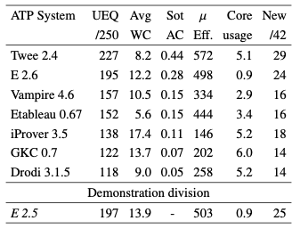

Unit EQuality Results

Salient Systems
- Twee surged to the forefront
- Was beaten by E in CASC-J10
- Goal directed transformation
- Waldmeister tested, solved 187
- All Hail to King Nicolas of Twee. All Hail
Performance Measures
- Drodi and Etableau had unaligned efficiency
- Twee, iProver, GKC, Drodi used the most cores
- Etableau fulfilled the promise
- New problems helped separation
- From Twee developer, but no advantage accrued
Portfolio Possibilities
- 6 problems unsolved, 84 all solved
- 38 unique solutions, 30 by Twee
- Portfolio provides very small gain